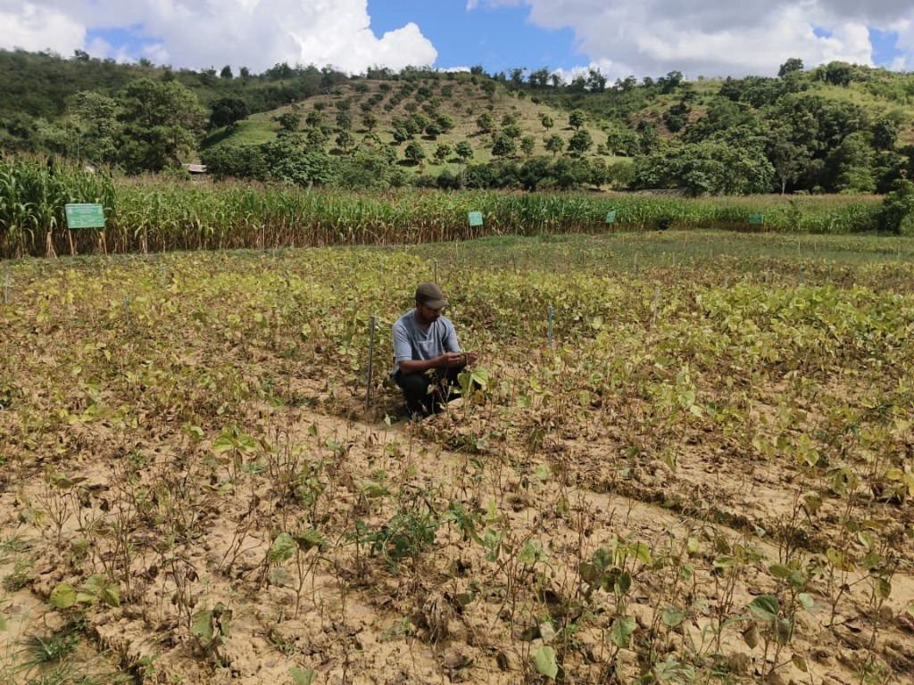
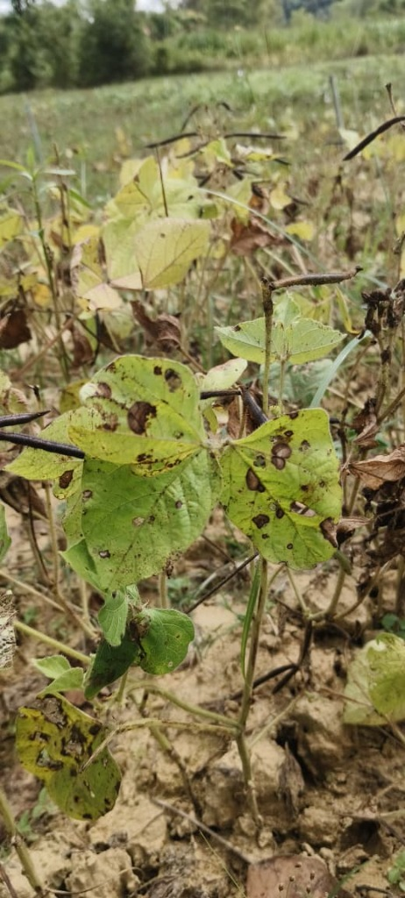
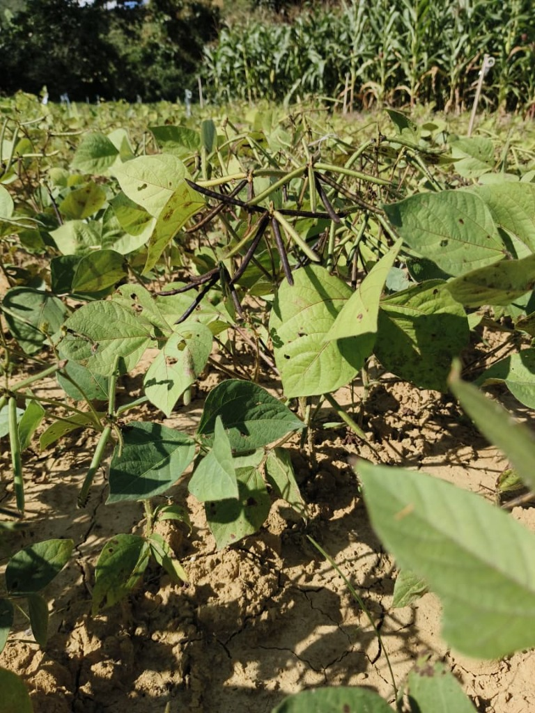
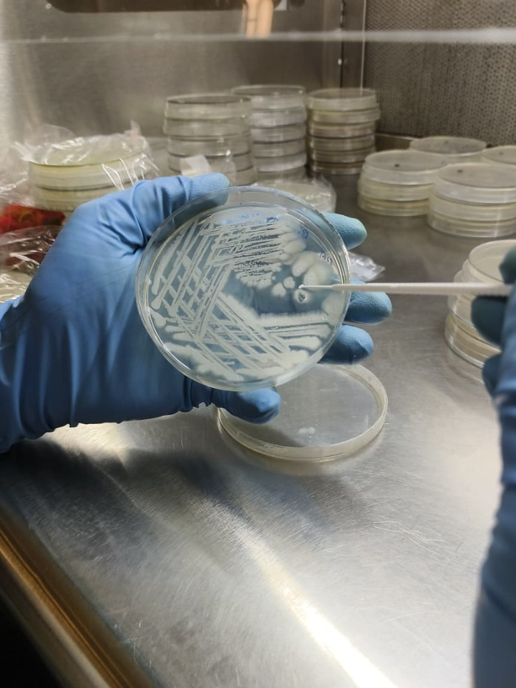
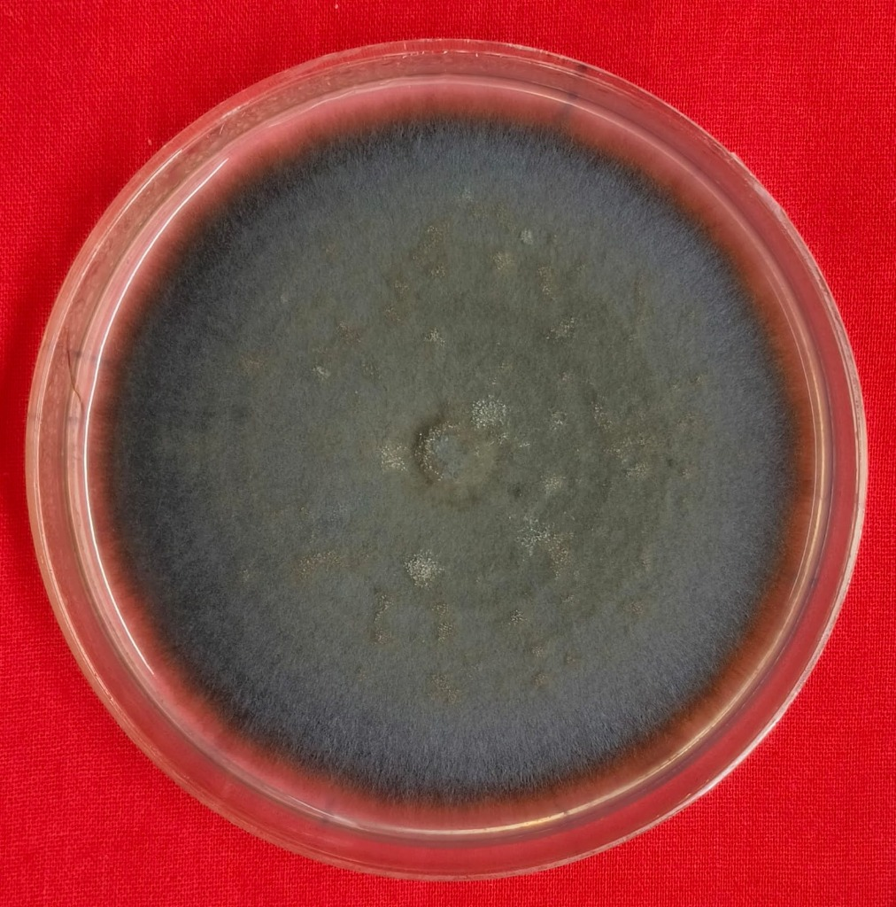
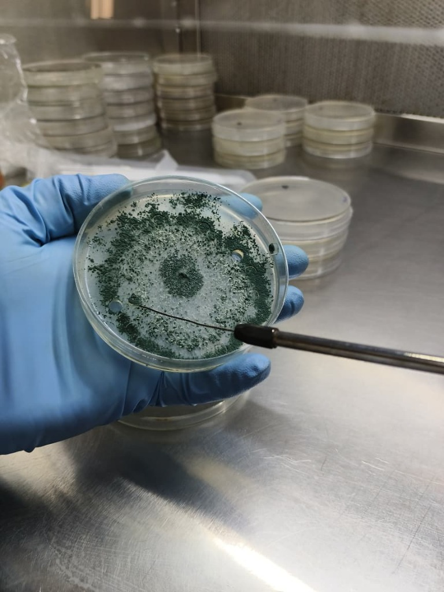
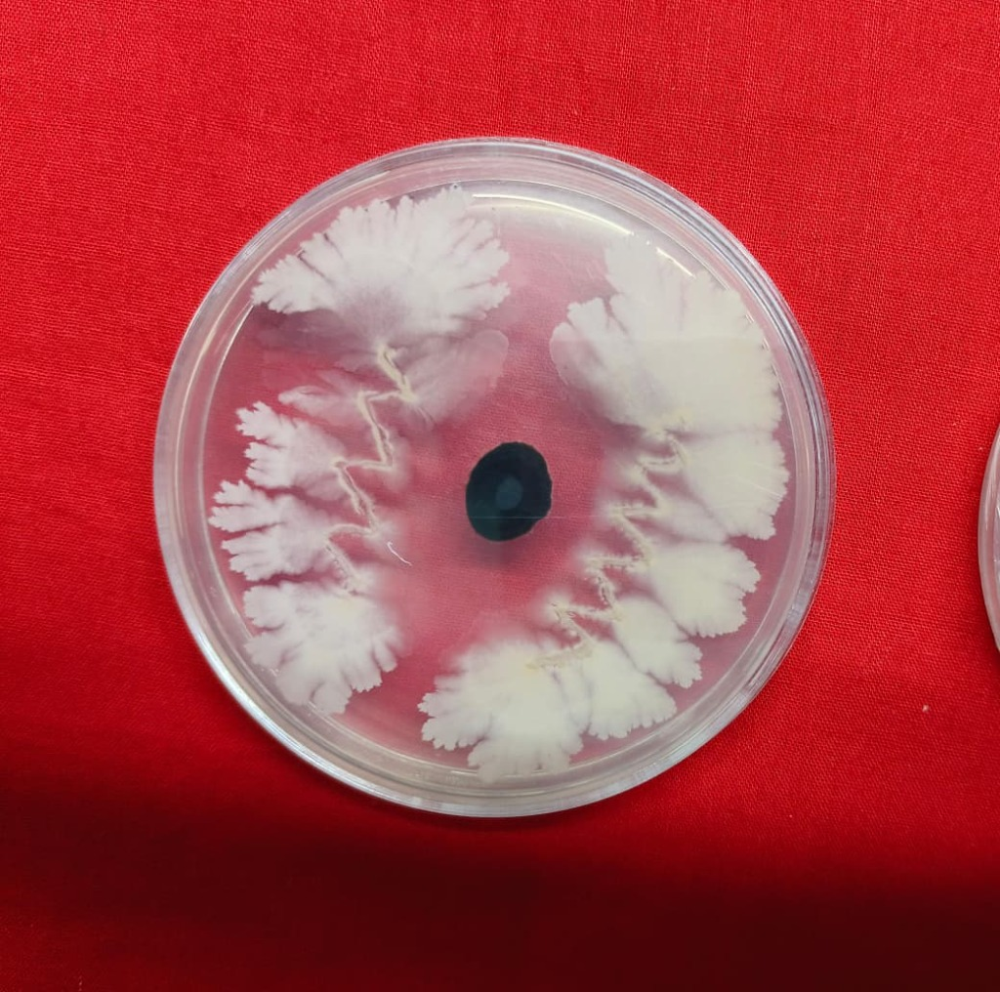
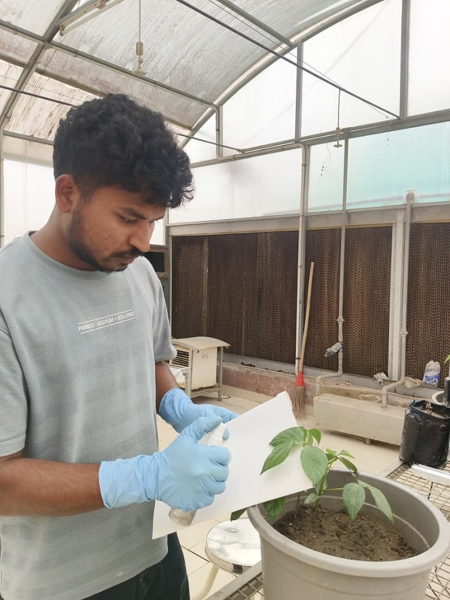
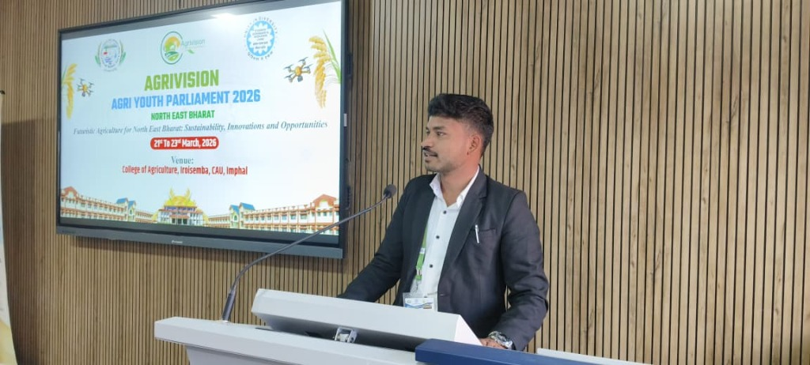
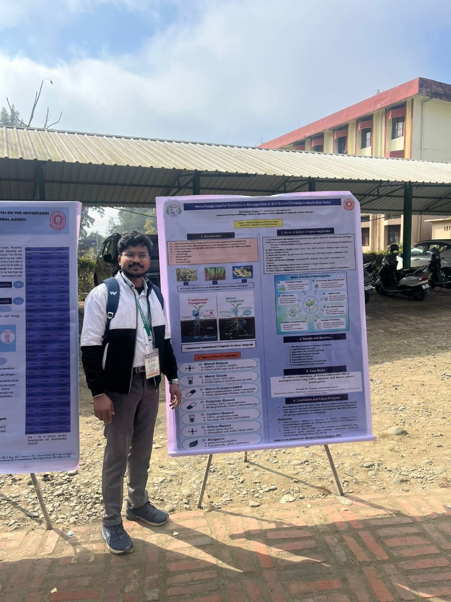

Investigating master's thesis research titled
"Studies of Cercospora leaf spot of Mungbean and its management"
under the guidance of Dr. Ph. Sobita Devi at Central Agricultural University, Imphal.
I am an M.Sc. Scholar in Plant Pathology at the College of Agriculture (CoA), Central Agricultural University (CAU), Imphal, Manipur. My academic journey combines classical mycological diagnostics with modern bio-rational crop protection strategies to support agricultural sustainability.
My passion centers on protecting vital pulse crops from destructive foliar and soil-borne phytopathogens. Through rigorous field monitoring in Northeast Indian agro-ecosystems and controlled laboratory bioassays, I aim to develop practical, farmer-accessible Integrated Disease Management (IDM) solutions that minimize chemical ecotoxicity.
In addition to foliar mycology, my laboratory work encompasses screening native rhizosphere-competent Pseudomonas fluorescens and mycoparasitic Trichoderma isolates, alongside evaluating advanced nano-fungicide delivery formulations.
Mungbean (Vigna radiata L. Wilczek) is a critical protein-rich pulse crop in Northeast India whose yield is severely compromised by Cercospora leaf spot (caused by Cercospora canescens and C. cruenta). This thesis addresses the disease cycle through three comprehensive scientific objectives:
Systematic field evaluation of diverse Mungbean (Vigna radiata) cultivars and germplasm lines under natural monsoonal infection pressure at CAU Imphal experimental plots.
We quantify disease incidence, foliar severity indices (using a 0–9 disease scoring scale), lesion expansion kinetics, and host plant resistance mechanisms across susceptible and resistant genotypes.



Aseptic microbiological isolation of fungal pathogens from naturally infected Mungbean foliar lesions using laminar airflow hood culturing on Potato Dextrose Agar (PDA).
We perform single-spore and hyphal-tip purification, confirm pathogenicity through Koch's postulates, and characterize the diagnostic etio-morphology of Cercospora canescens and C. cruenta (conidiophore septation and acicular conidia).


Evaluating eco-friendly and bio-rational control measures against virulent Cercospora isolates under controlled laboratory and greenhouse conditions.
Our in vitro management protocol screens native antagonistic biocontrol agents—including mycoparasitic Trichoderma strains and antibiosis-producing Pseudomonas fluorescens—alongside low-chemical-residue nano-fungicide formulations via poisoned food and dual-culture bioassays.



This comprehensive book chapter examines the biochemical and ecological pathways by which Pseudomonas fluorescens suppresses phytopathogens. Key focus areas include antibiotic biosynthesis (such as 2,4-DAPG and phenazine), siderophore-mediated iron competition in the rhizosphere, lytic enzyme secretion, and the elicitation of Induced Systemic Resistance (ISR) for eco-friendly disease management.

AGRI YOUTH PARLIAMENTDelivered an oral presentation at the AgriVision 2026 Agri Youth Parliament at the College of Agriculture, CAU, Imphal. Highlighted innovative biological control strategies, sustainable pulse pathology, and youth leadership in transforming Northeast Indian agriculture.

MANIPUR SCIENCE CONGRESSExhibited and defended research findings at the Manipur Science Congress (co-authored with Dr. Ph. Sobita Devi). Demonstrated the mechanisms, efficacy, and low ecotoxicity of silver and metal-oxide nanoparticles in controlling soil-borne crop pathogens in Northeast India.
Expert & Native Fluency in reading, writing, and speaking. Highly skilled in vernacular agricultural extension, farmer outreach, and translating agronomic disease management practices across North and East India.
Intermediate & Academic Competence in reading, writing, and scientific drafting. Experienced in literature review, thesis documentation, symposia abstracts, and research manuscript preparation.
Send a direct message regarding research collaborations, field trials, or symposia.